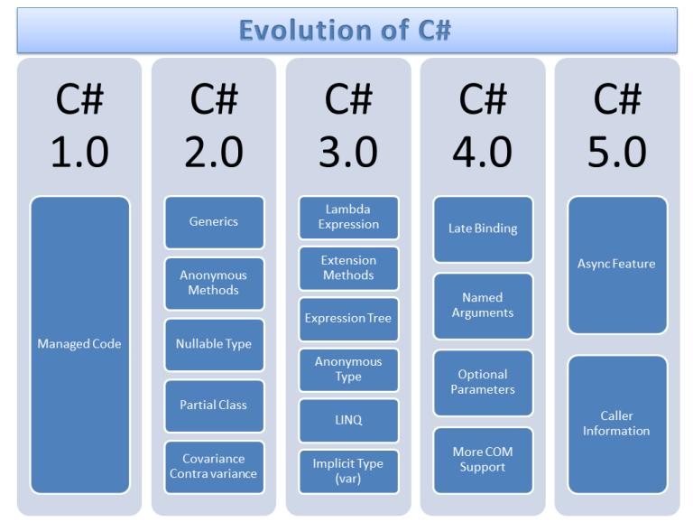

|  | C# (произносится си шарп) — объектно-ориентированный язык программирования. Разработан в 1998—2001 годах группой инженеров под руководством Андерса Хейлсберга в компании Microsoft как язык разработки приложений для платформы Microsoft .NET Framework и впоследствии был стандартизирован как ECMA-334 и ISO/IEC 23270. | |
| 2015 | ||